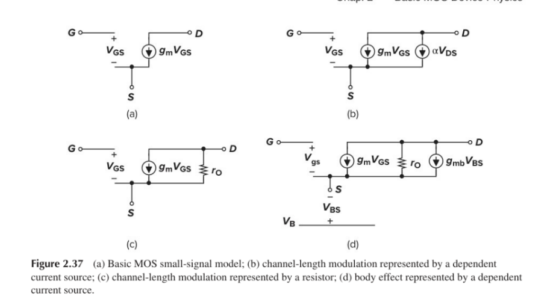
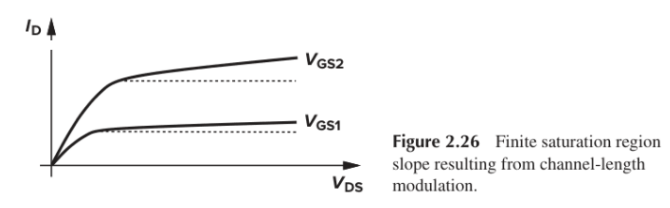

2. Where $\alpha V_{DS}$ Comes From (Fig. 2.37b, Page 4)
In small-signal analysis, you wiggle one voltage at a time and see how the current changes:
Wiggle $V_{GS}$ $\rightarrow$ $I_D$ changes by $g_m V_{GS}$. That is your first current source between Drain (D) and Source (S).
Now hold $V_{GS}$ fixed and wiggle $V_{DS}$. Because of that non-zero slope from channel-length modulation, $I_D$ also increases proportionally to the change in $V_{DS}$.
To show this extra current in the circuit diagram, Razavi places a second dependent current source in parallel between D and S called $\alpha V_{DS}$ (where $\alpha$ is simply the slope of the $I_D$ vs. $V_{DS}$ curve, $\frac{\partial I_D}{\partial V_{DS}}$).
Look closely at the $\alpha V_{DS}$ current source in Fig. 2.37(b):
It is connected directly between Drain (D) and Source (S).
The voltage controlling it ($V_{DS}$) is the exact same voltage across its own two terminals (D and S).
By Ohm's Law, any two-terminal element whose current is directly proportional to the voltage across its own terminals ($I = \alpha V$) is just a linear resistor with resistance $R = \frac{V}{I} = \frac{1}{\alpha}$!
Why $g_m V_{GS}$ stays a current source: Its current flows between D and S, but is controlled by the voltage at a different terminal ($G$ to $S$).
Why $\alpha V_{DS}$ becomes $r_O$: Its current flows between D and S, and is controlled by the voltage between D and S. So we replace the $\alpha V_{DS}$ source with a simple resistor called output resistance ($r_O$).

Figure 2.37: (a) Basic MOS small-signal model; (b) channel-length modulation represented by a dependent current source; (c) channel-length modulation represented by a resistor; (d) body effect represented by a dependent current source.
4. The Math for $r_O$ (Equations 2.44 – 2.48, Page 4)
Since $r_O$ is the inverse of the slope $\frac{\partial I_D}{\partial V_{DS}}$:
Take the derivative of the saturation current equation with respect to $V_{DS}$:
Notice that $\frac{1}{2}\mu_n C_{ox}\frac{W}{L}(V_{GS} - V_{TH})^2$ is just the DC drain current $I_D$ (assuming $\lambda V_{DS} \ll 1$). Therefore, $\frac{\partial I_D}{\partial V_{DS}} \approx \lambda I_D$.
If the channel was ideal ($\lambda = 0$, slope = $\tan 0^\circ$), then $r_O = \frac{1}{0} = \infty$ (an open circuit, which brings you right back to Fig. 2.37a).
Part 1: Where $\alpha V_{DS}$ comes from (The Two Knobs)
Think of the Drain Current ($I_D$) like water coming out of a pipe, controlled by two separate knobs:
Knob 1 is $V_{GS}$ (Gate-to-Source voltage).
Knob 2 is $V_{DS}$ (Drain-to-Source voltage).
To build the small-signal circuit, we test one knob at a time:
Turn Knob 1 ($V_{GS}$), lock Knob 2 ($V_{DS}$):
You change $V_{GS}$ slightly. More current flows from Drain to Source. How much extra current? $g_m \times V_{GS}$. So, we draw a current source between Drain and Source labeled $g_m V_{GS}$ (Fig. 2.37a).
Lock Knob 1 ($V_{GS}$), turn Knob 2 ($V_{DS}$):
Now, you keep $V_{GS}$ completely fixed (for example, staying on the $V_{GS1}$ curve in Fig. 2.26 on Page 3) and you increase $V_{DS}$.

Figure 2.26: Finite saturation region slope resulting from channel-length modulation ($\text{slope} = \alpha$).
If the line was flat ($\tan 0^\circ$), turning Knob 2 would do nothing. Extra current = $0$.
But the line tilts up! Because of channel-length modulation, increasing $V_{DS}$ pushes a little bit of extra current from Drain to Source.
If the upward slope of that line is some number called $\alpha$, then changing the voltage by $V_{DS}$ gives you an extra current equal to $\text{slope} \times \text{voltage} = \alpha V_{DS}$.
Since this extra current also flows from Drain to Source, we put a second current source in parallel with the first one and label it $\alpha V_{DS}$ (Fig. 2.37b).
(Total small-signal current from D to S is now the sum of both knobs: $g_m V_{GS} + \alpha V_{DS}$.)
Part 2: The Ohm's Law Case (Why $\alpha V_{DS}$ becomes a resistor $r_O$)
Now look at that second current source $\alpha V_{DS}$ in Fig. 2.37(b) on Page 4:
Its top wire is connected to D (Drain).
Its bottom wire is connected to S (Source).
And the formula for the current flowing through it is:
$$I = \alpha \cdot V_{DS}$$
Now think about a normal resistor in basic Ohm's Law:
$$V = I \cdot R \implies I = \left(\frac{1}{R}\right) \cdot V$$
Compare the two equations:
Our current source between D and S: $I = \alpha \cdot V_{DS}$
A normal resistor between D and S: $I = \left(\frac{1}{r_O}\right) \cdot V_{DS}$
They are doing the exact same thing! If you put $1\text{ V}$ across D and S, both of them let a fixed multiple of current pass from D to S. If you double $V_{DS}$, both of them double the current between D and S.
Because the voltage controlling the current ($V_{DS}$) is across the exact same two points (D and S) where the current is flowing, that dependent current source behaves 100% like a normal resistor of value $r_O = \frac{1}{\alpha}$. So instead of drawing a clunky current source symbol $\alpha V_{DS}$, we just draw a simple resistor $r_O$ (Fig. 2.37c).
Why couldn't we turn $g_m V_{GS}$ into a resistor too?
Because $g_m V_{GS}$ flows between D and S, while its controlling voltage ($V_{GS}$) is over at G and S. A normal resistor between D and S has no idea what voltage is happening over at the Gate! So $g_m V_{GS}$ must stay a dependent current source.
The Third Element: Dependent Current Source $g_{mb}V_{bs}$ (Fig. 2.37d, Page 4)
The third element in Figure 2.37(d) on Page 4—the dependent current source $g_{mb}V_{bs}$—comes from the Body Effect (where the bulk/substrate acts like a "second gate").
1. The "Third Knob" ($V_{BS}$)
Up to now, we looked at two knobs controlling the drain current $I_D$: Gate-Source voltage ($V_{GS}$) and Drain-Source voltage ($V_{DS}$).
However, a MOSFET actually has four terminals: Gate (G), Drain (D), Source (S), and Bulk/Body (B).
Normally, if the Source and Bulk are both tied directly to ground, $V_{BS} = 0$, and you don't have to worry about it.
But in many analog circuits (like a Source Follower or Cascode, which you'll see in Section 12), the Bulk is tied to ground, while the Source voltage wiggles up and down with the signal.
Whenever the voltage between the Bulk and Source ($V_{BS}$) changes, it changes the width of the depletion region under the channel, which directly changes the Threshold Voltage ($V_{TH}$).
2. How Changing $V_{BS}$ Changes $I_D$ (The Chain Reaction)
Hold $V_{GS}$ and $V_{DS}$ completely fixed, and wiggle only the Bulk-to-Source voltage ($V_{BS}$):
You increase $V_{BS}$ (or decrease $V_{SB}$, since $V_{BS} = -V_{SB}$).
Threshold voltage $V_{TH}$ drops slightly.
Because $I_D = \frac{1}{2}\mu_n C_{ox}\frac{W}{L}(V_{GS} - V_{TH})^2$, a smaller $V_{TH}$ makes the overdrive term $(V_{GS} - V_{TH})$ larger.
Drain current $I_D$ increases!
Because the Bulk voltage controls the drain current just like the main Gate does, Razavi states that "the bulk behaves as a second gate" (often called the back gate).
3. Why It Is Drawn as a Current Source $g_{mb}V_{bs}$ in Fig. 2.37(d)
Just like we defined transconductance $g_m$ for the main gate, we define body transconductance ($g_{mb}$) for this "second gate":
$$g_{mb} = \frac{\partial I_D}{\partial V_{BS}}$$
If the small-signal voltage between Bulk and Source changes by $V_{bs}$, the drain-to-source current changes by $g_{mb}V_{bs}$.
Where does this extra current flow? Between Drain (D) and Source (S), in the exact same direction as $g_m V_{GS}$.
So in Figure 2.37(d), we place another dependent current source in parallel between D and S, pointing from D to S, with value $g_{mb}V_{bs}$.
Why doesn't $g_{mb}V_{bs}$ turn into a resistor like $r_O$ did? Because the current flows between D and S, whereas the controlling voltage ($V_{bs}$) is measured between B and S. Since those are not the same two terminals, it stays a dependent current source.
4. The Formula Connecting $g_{mb}$ and $g_m$ (Equations 2.49 – 2.54, Page 4)
Using the chain rule on the saturation current equation:
Differentiate $I_D$ with respect to $V_{BS}$ (remembering that $V_{TH}$ is the variable that depends on $V_{BS}$):
Substituting that in gives the famous exam relation (Eq. 2.53 & 2.54):
$$g_{mb} = \eta g_m$$
Typically, $\eta$ is around $0.1$ to $0.3$ (meaning the "back gate" Bulk is about 10% to 30% as strong as the main Gate).
Part 1: Quick recap on why $g_{mb}V_{bs}$ is NOT a resistor
Think of a normal resistor:
Water (current) flows between Pipe A and Pipe B, and the pressure difference controlling it is measured right across those same two Pipes A and B.
Now look at $g_{mb}V_{bs}$:
The current ($g_{mb}V_{bs}$) flows between Drain and Source (D and S).
But the voltage controlling it ($V_{bs}$) is measured between the Bulk and Source (B and S).
Because the two terminals where the current flows (D and S) are different from the terminals measuring the control voltage (B and S), it acts like a remote-controlled valve rather than a simple passive resistor. That’s why it stays a dependent current source.
Part 2: What is $\Phi_F$ and why is it $\Phi_F$ (not just $F$)?
In the formula:
$$\frac{\gamma}{2\sqrt{2\Phi_F + V_{SB}}}$$
1. Why is it $\Phi_F$ and not $F$?
$\Phi$ (Phi) is the standard physics symbol for Electrostatic Potential.
$F$ stands for Fermi (referring to the Fermi level / Fermi energy of the semiconductor).
It is not a variable $F$ multiplied by something. $\Phi_F$ is a single combined term meaning "Fermi Potential".
2. What actually is the Fermi Potential ($\Phi_F$)?
In semiconductor physics, $\Phi_F$ is a fixed number that tells you how heavily doped your silicon bulk (substrate) is.
Heavy doping = higher $\Phi_F$.
Light doping = lower $\Phi_F$.
It represents a built-in energy barrier inside the silicon that the transistor has to overcome before it can create a channel to turn on.
3. How does it affect the equation and $V_{TH}$?
Look at what is happening inside that square root: $2\Phi_F + V_{SB}$.
$2\Phi_F$ is the internal built-in potential barrier of the silicon.
$V_{SB}$ is the external voltage you apply between the Source and Bulk.
When you change the Source-Bulk voltage ($V_{SB}$), you are tilting the energy bands inside the silicon. The total barrier the transistor faces becomes $(2\Phi_F + V_{SB})$.
Because that total barrier gets larger, it becomes harder to attract electrons to form the channel.
Result? The threshold voltage ($V_{TH}$) goes up (the body effect).
The $\Phi_F$ term is just there in the denominator to anchor the math to the actual physical doping level of your silicon chip.